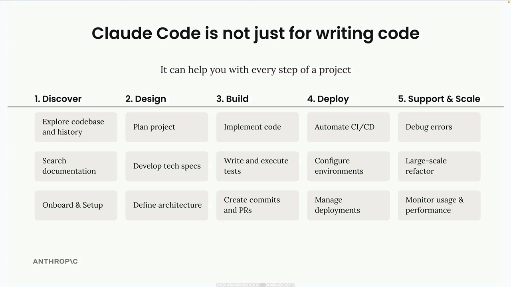
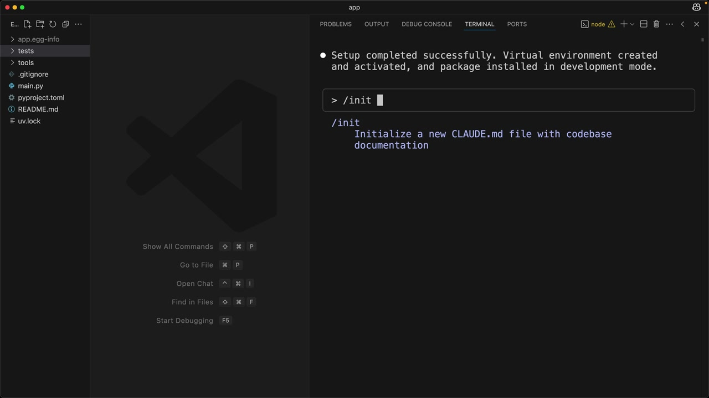
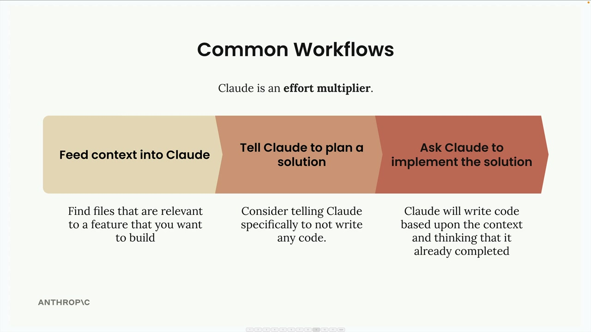
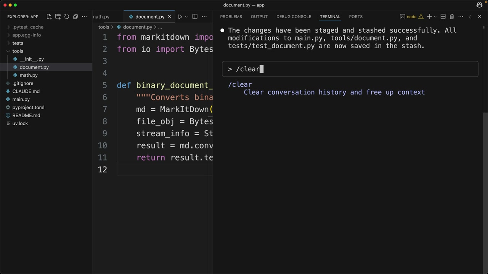

Claude Code в работе
Чему научитесь
Видео 10:29 и текст урока
К концу урока вы сможете:
- создать
CLAUDE.mdкомандой/initи выбрать нужную область действия; - работать по схеме «контекст → план → реализация»;
- применять с Claude Code разработку через тесты (TDD).
Видео и текст урока. В видео работа идёт на учебном проекте — небольшом MCP-сервере; архив с ним приложен к уроку на Skilljar.
Смотреть урок на Skilljar Claude Code in action · 10:29Claude Code — не только инструмент для написания кода: он рассчитан на то, чтобы работать вместе с вами на всех этапах программного проекта. Представьте, что это ещё один инженер в команде, который возьмёт на себя всё — от начальной настройки до развёртывания и поддержки.

Команда /init
Начиная работу с Claude Code над проектом, первым делом стоит выполнить команду /init. Она говорит Claude просканировать всю кодовую базу и разобраться в структуре проекта, зависимостях, стиле кода и архитектуре.
Всё, что Claude узнал, он кратко записывает в специальный файл CLAUDE.md. Этот файл автоматически добавляется как контекст во все будущие разговоры, так что Claude помнит важные детали вашего проекта.
Файлов CLAUDE.md может быть несколько, для разных областей действия:
- Project (проект) — общий для всех инженеров, работающих над проектом;
- Local (локальный) — ваши личные заметки, которые не попадают в git;
- User (пользовательский) — действует во всех ваших проектах.
Запуская /init, можно добавить особые указания — на какие области Claude стоит обратить внимание. В созданном файле будут команды сборки, правила оформления кода и характерные для проекта приёмы, которым Claude должен следовать.

/init: «Initialize a new CLAUDE.md file with codebase documentation».Быстро добавлять заметки в CLAUDE.md можно и командой #. Например, если ввести # Always use descriptive variable names, Claude Code предложит добавить это правило в память проекта (project), локальную (local) или пользовательскую (user).
Типичные рабочие процессы
Claude лучше всего работает, если относиться к нему как к множителю усилий: чем больше контекста и структуры вы даёте, тем лучше результат. Вот самый эффективный рабочий процесс:

Шаг 1. Дайте Claude контекст
Прежде чем просить Claude что-то сделать, найдите в кодовой базе файлы, относящиеся к функции, которую вы хотите создать. Попросите Claude сначала прочитать и проанализировать их. Так у Claude будут примеры ваших приёмов кодирования и уже существующая функциональность, на которую можно опереться.
Шаг 2. Попросите Claude спланировать решение
Вместо того чтобы сразу переходить к реализации, попросите Claude обдумать задачу и составить план. Прямо скажите Claude пока не писать код — только сосредоточиться на подходе и нужных шагах.
Шаг 3. Попросите Claude реализовать решение
Когда есть хороший план, попросите Claude его реализовать. Claude напишет код, опираясь на контекст и планирование, которые вы уже проделали вместе.
Разработка через тесты
Для ещё лучших результатов можно использовать подход через тесты (test-driven development):

/clear (о ней — ниже).- Дайте Claude контекст — как и раньше, покажите Claude нужные файлы;
- Попросите Claude придумать тестовые сценарии — пусть Claude перечислит, какие тесты проверят новую функцию;
- Попросите Claude написать эти тесты — выберите самые важные и попросите Claude их реализовать;
- Попросите Claude написать код, проходящий тесты — Claude будет дорабатывать реализацию, пока все тесты не пройдут.
Такой подход часто даёт более надёжный код, потому что у Claude есть чёткие критерии успеха, к которым можно стремиться.
Практический пример
Вот как эти процессы выглядят на практике. Допустим, вы хотите добавить в существующий проект инструмент конвертации документов:
// First, ask Claude to read relevant files > Read the math.py and document.py files // Then ask for planning (not implementation) > Plan to implement document_path_to_markdown tool: 1. Create a function that: - Takes a file path parameter - Validates the file exists - Determines file type from extension - Reads binary data from file - Leverages existing binary_document_to_markdown function - Returns markdown string 2. Add appropriate documentation 3. Register the tool with MCP server 4. Add tests // Finally, ask for implementation > Implement the plan
Claude создаст функцию, обновит нужные файлы, напишет тесты и даже запустит набор тестов, чтобы убедиться, что всё работает правильно.
Другие команды
В Claude Code есть несколько полезных команд:
/clear— очищает историю разговора и сбрасывает контекст;/init— сканирует кодовую базу и создаёт документацию вCLAUDE.md;#— добавляет заметки в файлCLAUDE.md.
Claude справляется и с рутинными задачами разработки: добавить изменения в индекс и закоммитить их в git, запустить тесты, управлять зависимостями. Вместо того чтобы переключаться между редактором и терминалом, можно поручить это Claude, а самому сосредоточиться на общей картине.
Главное в работе с Claude Code — помнить, что это партнёр по совместной работе, а не просто генератор кода. Чем больше контекста и структуры вы даёте, тем эффективнее Claude помогает создавать и поддерживать ваши проекты.
Дальше
Следующий урок — как подключать MCP-серверы к Claude Code.
Оригинал урока: Claude Code in action.